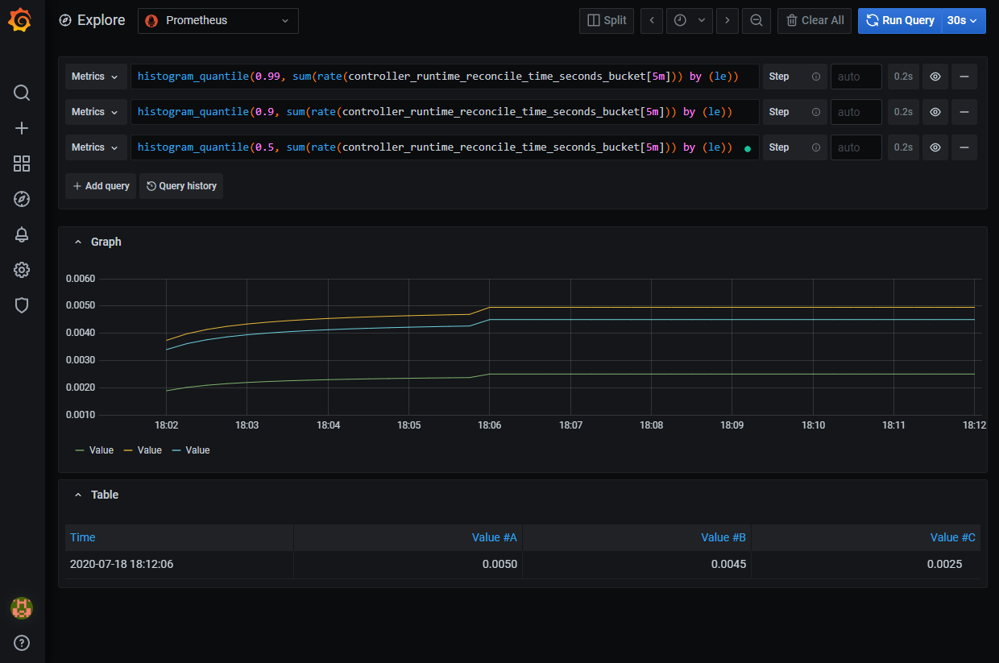

监控
在运行自定义控制器时，监控是非常重要的。 为了确保系统稳定运行，如果自定义控制器管理的资源或自身出现问题，需要及时检测并采取适当的措施。
这里将介绍controller-runtime提供的指标公开机制。
基本指标
通过Kubebuilder生成的代码默认会公开基本指标。这些指标涵盖了CPU和内存使用量、Reconcile操作耗时以及Kubernetes客户端的延迟等与controller-runtime相关的指标。
让我们看一下都有哪些指标被公开。
通过访问在NewManager选项的MetricsBindAddress指定的地址，您可以查看已公开的指标。
import:“new-manager”,unindent:“true”
首先，让我们通过端口转发对指标端口进行访问。
kubectl -n markdown-view-system port-forward deploy/markdown-view-controller-manager 8080:8080
运行curl命令，您将看到类似以下的指标输出。
$ curl localhost:8080/metrics
# HELP controller_runtime_active_workers Number of currently used workers per controller
# TYPE controller_runtime_active_workers gauge
controller_runtime_active_workers{controller="markdownview"} 0
# HELP controller_runtime_max_concurrent_reconciles Maximum number of concurrent reconciles per controller
# TYPE controller_runtime_max_concurrent_reconciles gauge
controller_runtime_max_concurrent_reconciles{controller="markdownview"} 1
# HELP controller_runtime_reconcile_errors_total Total number of reconciliation errors per controller
# TYPE controller_runtime_reconcile_errors_total counter
controller_runtime_reconcile_errors_total{controller="markdownview"} 0
# HELP controller_runtime_reconcile_total Total number of reconciliations per controller
# TYPE controller_runtime_reconcile_total counter
controller_runtime_reconcile_total{controller="markdownview",result="error"} 0
controller_runtime_reconcile_total{controller="markdownview",result="requeue"} 0
controller_runtime_reconcile_total{controller="markdownview",result="requeue_after"} 0
controller_runtime_reconcile_total{controller="markdownview",result="success"} 0
# HELP controller_runtime_webhook_requests_in_flight Current number of admission requests being served.
# TYPE controller_runtime_webhook_requests_in_flight gauge
controller_runtime_webhook_requests_in_flight{webhook="/mutate-view-zoetrope-github-io-v1-markdownview"} 0
controller_runtime_webhook_requests_in_flight{webhook="/validate-view-zoetrope-github-io-v1-markdownview"} 0
# HELP controller_runtime_webhook_requests_total Total number of admission requests by HTTP status code.
# TYPE controller_runtime_webhook_requests_total counter
controller_runtime_webhook_requests_total{code="200",webhook="/mutate-view-zoetrope-github-io-v1-markdownview"} 0
controller_runtime_webhook_requests_total{code="200",webhook="/validate-view-zoetrope-github-io-v1-markdownview"} 0
controller_runtime_webhook_requests_total{code="500",webhook="/mutate-view-zoetrope-github-io-v1-markdownview"} 0
controller_runtime_webhook_requests_total{code="500",webhook="/validate-view-zoetrope-github-io-v1-markdownview"} 0
・・・ 以下省略
自定义指标
除了controller-runtime提供的指标外，还可以公开与特定自定义控制器相关的自定义指标。 请参考Prometheus文档了解详细信息。
这里我们尝试将MarkdownView资源的状态作为指标公开。 考虑到MarkdownView有3种状态，我们将准备3个Gauge Vector。
我们准备一个用于更新指标的函数。
import:“set-metrics”,unindent:“true”
在更新状态时调用此函数。
import:“call-set-metrics”,unindent:“true”
另外，我们也需要准备一个函数用于删除指标。
import:“remove-metrics”,unindent:“true”
确保在资源删除时删除相应的指标。
import:“call-remove-metrics”,unindent:“true”
与之前相同，让我们再次查看一下指标。如果输出包含以下内容，那么设置成功。
$ curl localhost:8080/metrics
# HELP markdownview_available The cluster status about available condition
# TYPE markdownview_available gauge
markdownview_available{name="markdownview-sample",namespace="markdownview-sample"} 0
# HELP markdownview_healthy The cluster status about healthy condition
# TYPE markdownview_healthy gauge
markdownview_healthy{name="markdownview-sample",namespace="markdownview-sample"} 1
# HELP markdownview_notready The cluster status about not ready condition
# TYPE markdownview_notready gauge
markdownview_notready{name="markdownview-sample",namespace="markdownview-sample"} 0
kube-rbac-proxy
在由Kubebuilder生成的项目中，已经包含了 kube-rbac-proxy 的相关清单，以便使用。 通过使用kube-rbac-proxy，您可以通过RBAC设置权限，以允许访问指标端点。 通过将指标的API仅暴露给Prometheus，您可以阻止任意用户获取指标数据。
为了使用kube-rbac-proxy，请取消manager_auth_proxy_patch.yaml文件中的注释。
import:“patches,enable-auth-proxy”
同时，启用以auth_proxy_开头的4个清单文件。
在Grafana中可视化
接下来，让我们使用Prometheus和Grafana，将控制器的指标数据可视化。
首先，准备清单文件。
取消config/default/kustomization.yaml中以下部分的注释。
import:“resources,enable-prometheus”
运行make manifests以生成清单文件，然后将其应用到Kubernetes集群中。
为了设置Prometheus Operator，请按照以下步骤安装Helm。
- https://helm.sh/docs/intro/install/
接下来注册Helm存储库。
helm repo add prometheus-community https://prometheus-community.github.io/helm-charts
helm repo update
安装Prometheus Operator。请耐心等待设置完成。
kubectl create ns prometheus
helm install prometheus prometheus-community/kube-prometheus-stack --namespace=prometheus --set prometheus.prometheusSpec.serviceMonitorSelectorNilUsesHelmValues=false
kubectl wait pod --all -n prometheus --for condition=Ready --timeout 180s
由于需要授权Prometheus访问指标数据，因此请应用以下清单文件。 import
为了从本地环境访问Grafana界面，请设置端口转发。
kubectl port-forward service/prometheus-grafana 3000:80 --address 0.0.0.0 --namespace prometheus
在浏览器中打开http://localhost:3000以进入Grafana界面，并使用以下信息登录：
- 用户名：
admin - 密码：
prom-operator
打开Explore页面，并输入以下PromQL查询，即可监控Reconcile操作的处理时间。
histogram_quantile(0.99, sum(rate(controller_runtime_reconcile_time_seconds_bucket[5m])) by (le))
